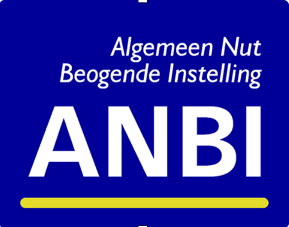

ANBI

Parochie van de Aleksandr Nevskikerk in Rotterdam, eerder geregistreerd in de KvK als «Stichting Bouw Russisch Orthodoxe Kerk», is erkend als een Algemeen Nut Beogende Instelling (ANBI) met RSIN-nummer 804900772, 824176601.
Administratieve structuur parochie Aleksandr Nevskikerk / Icoon Moeder Gods Snelverhorene te Rotterdam
| Veld | Stichting Bouw Russisch Orthodoxe Kerk | Parochie Alexander Nevskikerk |
|---|---|---|
| Officiële naam van de stichting/parochie | Stichting Bouw Russisch Orthodoxe Kerk, Rotterdam. KvK: 41135539. |
Parochie van de Heilige Rechtgelovige Grootvorst (Prince) Alexander Nevski kerk, Rotterdam. |
| Ook bekend als |
|
Parochie van de Heilige Alexander Nevskikerk in Rotterdam: de kerk van Heilige Rechtgelovige Grootvorst Alexander Nevski, oftewel de Aleksandr Nevskikerk in Rotterdam. |
| RSIN-nummer | 804900772 | 824176601 |
| Bezoekadres | A. Nevskikerk: Schiedamsesingel 220, Rotterdam, 3012 BA Snelverhorene kerk: Persijnstraat 16, Rotterdam, 3021 RV |
|
| Postadres | Schiedamsesingel 220, Rotterdam, 3012 BA | |
| Telefoon | (+31) 6 58955635, rector van de kerk, parochiehoofd (+31) 6 15047973, parochie secretaris |
|
| contact@ruskerk.nl, ruskerk.rdam@gmail.com, ruskerk.nl@gmail.com | ||
| Website |
www.ruskerk.nl (NL) a-nevski-kerk.eu/nl (onder voorbehoud) |
|
| Samenstelling / Kerkbestuur | Voorzitter: Anatoli Babiouk Secretaris: Iya Muzykina Penningmeester: Elena Y. Smirnova 3 algemene bestuurders. |
Voorzitter; Secretaris; Penningmeester; |
| Beloningsbeleid | De bestuurders ontvangen geen beloning voor hun werkzaamheden. | De bestuurders ontvangen geen beloning voor hun werkzaamheden. Er vindt geen bezoldiging plaats van de geestelijkheid of andere medewerkers. Wel worden gedeclareerde reis- en onkosten ten behoeve van de liturgische vieringen ten behoeve van de Parochie vergoed. |
| Huidige begunstigers | geen | geen |
| Doelstelling |
Liturgische diensten te verzorgen volgens de Russisch-Orthodoxe traditie; het toedienen van de Sacramenten; het geven van pastorale en diaconale hulp aan orthodoxe gelovigen. De bouw en onderhoud van kerkgebouwen en/of ruimten ten behoeve van eredienst van de Russisch-Orthodoxe Kerk in de stad Rotterdam (Schiedamsesingel 220 en Persijnstraat 16) en ook ten dienste van culturele en maatschappelijke activiteiten van die Kerk en ook alles wat met het voorgaande verband houdt en daaraan bevorderlijk kan zijn. |
|
| Beleidsplan |
Als gemeenschap dragen zij de zorg voor de behoeften van hun kerk, hun geestelijkheid en hun parochie met al haar instellingen, evenals voor de algemene behoeften van het bisdom. Voorts heeft de Parochie tot doel om in liefdevolle eenheid van gebed en eredienst gezamenlijk een christelijk leven op te bouwen. Dit door liturgische vieringen en sacramenten. Sacramenten — zoals de doop, de Myron zalving, het huwelijk, de biecht, de communie en de ziekenzalving — is het zichtbare werk van de geestelijkheid, waarmee Gods genade wonderlijke gaven overbrengt op de gelovigen die deze ontvangen. Individuele gelovigen worden terzijde gestaan door gesprekken met de geestelijkheid. |
|
| Aantal ingeschreven leden | De Stichting kent geen ingeschreven leden. | Parochie van de Aleksandr Nevskikerk in Rotterdam kent geen ingeschreven leden. |
| Aantal regelmatige bezoekers | ± 100 op gewone zondagen. | |
| Annexe instelling | Geen annexe instellingen verbonden. | |
| Financiële gegevens (kort overzicht van baten en lasten over het laatste afgesloten boekjaar) |
De inkomsten over 2025 bedroegen ca €85.872, waaronder:
De uitgaven over 2025 bedroegen ca €70.949, waaronder:
|
|
| Sociaal | Donateur Het Sovjet Ereveld Leusden. | |